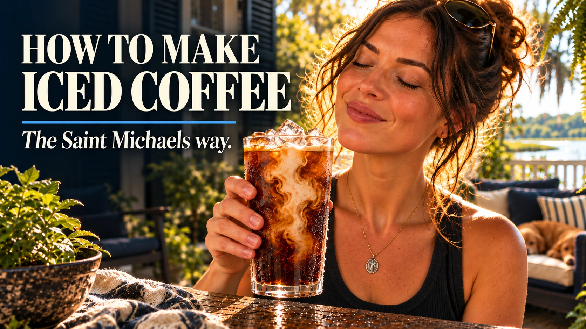

Coffee Knowledge · 8 minute read
Butter in Coffee: Is It Good for You? Benefits, Research & an Easy Recipe
Explore butter coffee, the research behind it, and an easy Saint Michaels Answer the Call Espresso recipe.
Read the article →Practical brew guides, thoughtful answers, and the stories behind your daily cup.
Explore butter coffee, the research behind it, and an easy Saint Michaels Answer the Call Espresso recipe.
Read the article →
Bold, cold, and never watered down. Make refreshing flash-brewed iced coffee at home in about five minutes.
Read the article →
What organic, Fair Trade and kosher certifications mean—and how to choose your daily cup with confidence.
Read the article →
What large studies say about coffee, liver and heart health, alertness, and how much caffeine is too much.
Read the article →Here I am. Send me.Isaiah 6:8